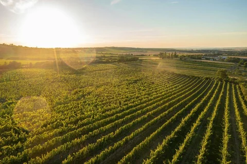

Accueil › Notre actualité › Mon Chai rejoint l’incubateur du Poool
Mon Chai rejoint l’incubateur du Poool
Mon Chai fait partie des neuf projets de la 9e promotion d’incubation du Poool x French Tech Rennes St Malo, annoncée le 29 septembre 2026. Pour notre équipe rennaise, cette entrée marque le début d’un accompagnement pour structurer l’entreprise tout en poursuivant le travail avec les domaines utilisateurs.

À retenir
- Une promotion de neuf projets, annoncée par Le Poool le 29 septembre 2026.
- Un parcours organisé en deux phases de douze mois.
- Un accompagnement entrepreneurial qui complète les retours de terrain des vignerons.
Le Poool, un partenaire de l’entrepreneuriat et de l’innovation
Le Poool accompagne les entreprises innovantes en Ille-et-Vilaine et anime la communauté French Tech Rennes St Malo. L’association met en relation des entrepreneurs, des entreprises, des experts et des acteurs du territoire. Son rôle est d’aider les projets à se construire et à trouver les ressources adaptées à leur développement.
Le programme d’incubation est adossé à Emergys Bretagne. Il propose notamment un chargé de mission dédié, des ateliers et un accès facilité à des dispositifs de financement non dilutif. Le Poool en présente les modalités sur la page de son programme.
Deux ans pour consolider le projet Mon Chai
Le parcours comprend une première phase de douze mois pour construire le projet entrepreneurial, puis douze mois d’accompagnement individualisé. Nous y trouvons un cadre pour travailler notre développement, confronter nos choix et partager les questions que rencontre une jeune entreprise.
Pour Mon Chai, cela signifie avancer sur deux sujets complémentaires : la qualité de l’outil utilisé par les domaines et la façon de les accompagner. Une fonctionnalité peut être utile sur le papier ; elle doit aussi être compréhensible, accessible et facile à prendre en main dans le quotidien du domaine.
Le terrain reste notre point de départ
L’incubation apporte des regards extérieurs sur l’entreprise. Les vignerons apportent ceux qui comptent pour les usages : comment retrouver une information, préparer une saisie ou relier les activités de la vigne à la vente.
Notre cap reste le même : une utilisation simple, un prix accessible et la participation des vignerons aux évolutions. Les échanges avec l’écosystème rennais viennent soutenir ce travail, avec les retours des domaines qui découvrent et utilisent Mon Chai.
Merci au Poool et à la French Tech Rennes St Malo pour leur accueil dans cette nouvelle promotion.
Découvrez ce que nous construisons avec les vignerons
Parcourez les fonctionnalités de Mon Chai ou échangez avec nous sur l’organisation et les besoins de votre domaine.